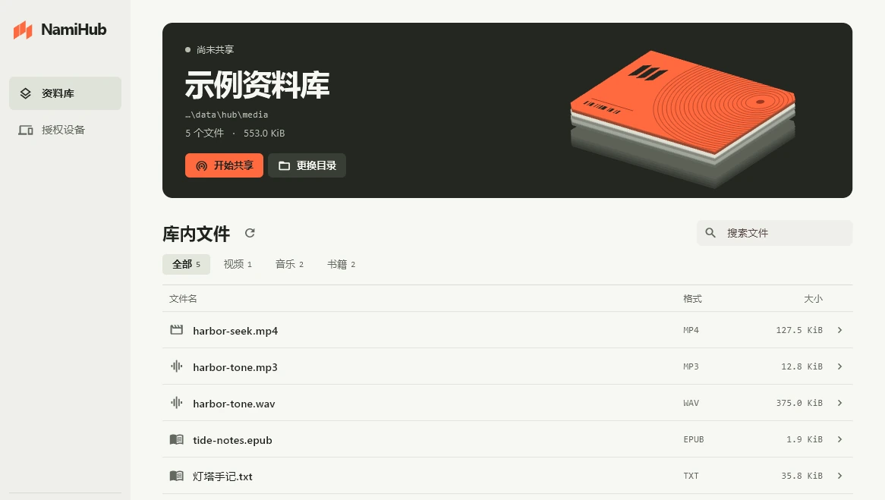

用八位码连接
电脑和客户端需要连接到可互访的同一局域网。
- 选择要共享的文件夹
在 NamiHub 点击「更换目录」，确认文件列表后，点击「开始共享」。
- 在客户端输入配对码
在 NamiRead 书架打开「浏览 NamiHub 书库」，或在 NamiView 媒体库打开「NamiHub」。每个应用单独配对。
- 点书名阅读，点片名播放
书籍和视频按需读取。想在离线时打开某本书或某一集，在对应条目的菜单中选择「下载到本机」。

电脑和客户端需要连接到可互访的同一局域网。
在 NamiHub 点击「更换目录」，确认文件列表后，点击「开始共享」。
在 NamiRead 书架打开「浏览 NamiHub 书库」，或在 NamiView 媒体库打开「NamiHub」。每个应用单独配对。
书籍和视频按需读取。想在离线时打开某本书或某一集，在对应条目的菜单中选择「下载到本机」。